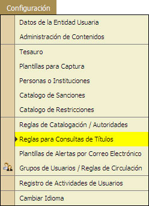

5.9. Reglas para Consultas de Títulos
En esta opción el Administrador del Sistema podrá realizar la Configuración de las Consultas de Títulos, Agregar, Borrar y Modificar.
REQUISITO: El administrador del sistema deberá tener los suficientes privilegios para tener acceso a esta opción.

<AGREGAR NUEVA CONSULTA >
- Hacer "Clic" en el la opción [Nueva Consulta].
- El sistema mostrará los Datos Requeridos para el nuevo tipo de Restricción.
- Escribir el Nombre del nuevo Tipo de Restricción.
- "Selecionar" la Casilla de Activa.
- "Seleccionar" las Opciones que se desean incluir para la Consulta.
- Palabras Clave.
- Título.
- Autor.
- Materias.
- Signatura Topográfica.
- ISBN.
- ISSN.
- "Seleccionar" cuantos registros se desea que se muestren por página de consulta.
- "Seleccionar" el Contenido Digital.
- "Seleccionar" el Tipo de Consulta.
- Consulta de Acceso al Público.
- Administtivos.
- Usuarios de Consulta.
- "Seleccionar" si se permite:
- Ver fichas de títulos.
- Ver Copias existentes.
- Ingresar a la información detallada de cada Copia.
- "Seleccionar" el estilo de Visualización.
- Fichas MARC.
- Fichas AACR2
- Filtrados por Rango de Edad.
- Filtrados por tipo de Material.
- "Seleccionar" la consulta será ordenada por:
- Autor.
- Título.
- Signatura Topográfica.
- Título y Edición.
- Hacer "Clic" en la opción [Guardar Cambios].
- El sistema mostrará un mensaje de alerta.
<MODIFICACIÓN DE UN TIPO DE SANCIÓN>
- Hacer "Cilc" en el Nombre o Descripción de la Consulta.
- El sistema mostrará los datos requeridos para realizar la modificación.
- Hacer "Clic" en la opción [Guardar Cambios].
- El sistema mostrará un mensaje de alerta.
<BORRAR UN TIPO DE SANCIÓN >
- "Seleccionar" la casilla con el Nombre o descripción de la Consulta que se desea Borrar.
- Hacer "Cilc" en la opción [Borrar Tipo de Sanción].
- El sistema mostrará un menasje de alerta.